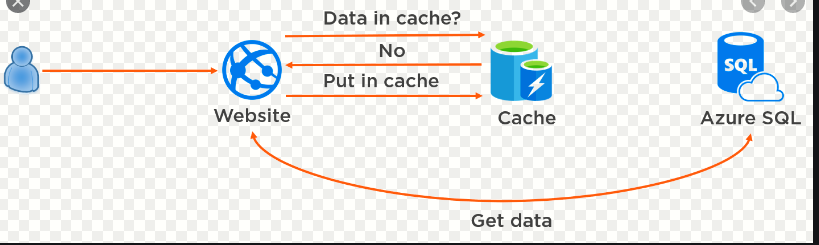
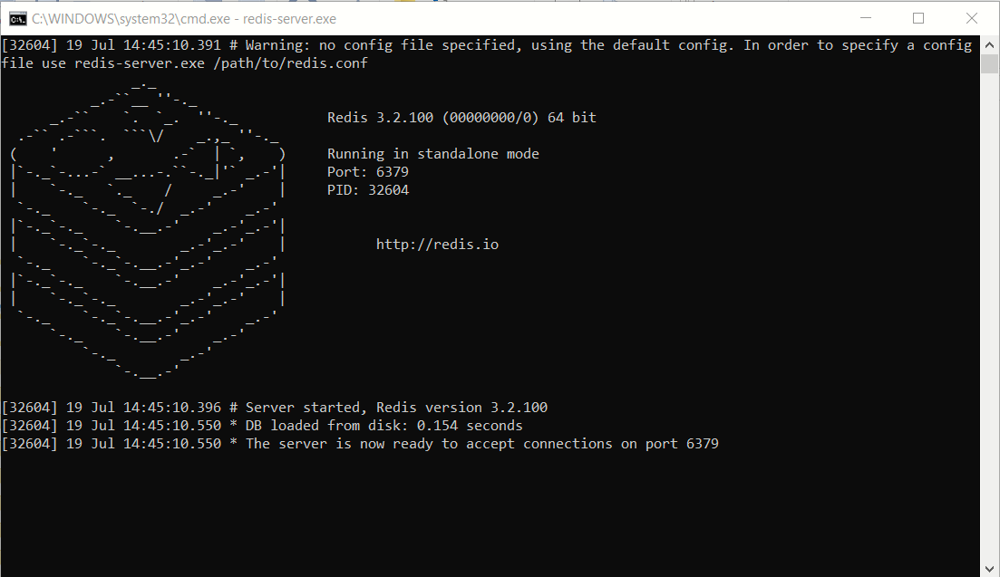
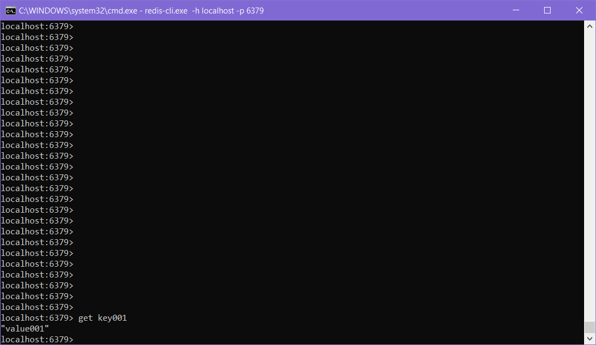

Redis is a very powerful distributed caching engine and offers very low latency key-value pair caching. If used in the right business context, Redis can significantly boost application performance. In this article we will do a walk through of how to use Redis Cache from a .NET Core Serverless HTTP function. I intend to demonstrate the simplicity and elegance of Redis caching through the following topics:
What is a cache? Think of it as a repository of frequently used data which can be accessed very speedily, thereby improving application performance.
If we go back to the early days of .NET Framework 1.0, ASP.NET provided a means of caching objects in the memory of the worker process.
The cached data was confined to the local server. If your objects supported binary serialization then using the in-proc Cache was fairly easy.
It was all fine until you faced the need for scaling out your web servers to more than one instance. How do you keep the in-proc cache on 2 or more web servers in sync.

In the scenario of a load balanced farm with more than one web servers, if Web server 1 made an update to a record and invalidated its cache, there is no way for Web server 2 to get that knowledge
This is where distributed cache products like Memcached and Redis change the game by taking the cache out of the local web server and placing it on an external server(s).
Notice the plural. Yes - the distributed cache could itself scale out horizontally.
[you need to create the above images]
NOT REQUIRED Talk about earliest versions of caching (ASP.NET)
If you were to hit bbc.co.uk, one cannot help but notice how fast the page gets loaded.
I am not privy to the knowledge if BBC is using Redis or any other caching technology or it could just be a case of a super-fast CMS database.
However, the site is an example of what a good page load response time should be and
can be fairly easily implemented by caching.
TO BE DONE - Amazon - Show the shopping cart of Amazon
Any line of business application where there is infrequently changing static data held in the database. Example - Relational tables which store lookup data like countries, item codes, and static customer information. For most practical purposes there is a lot of mileage to gain if round trips to the database can be minimized.
think!think!
NOT SURE IF SHOULD REMOVE THIS - keep this for a later date show a simple code snippet
to be done
to be done
Redis is an open source distributed in-memory key-value pair database and message broker. The acronym stands for Remote Dictionary Server. Put simplistically, Redis is a daemon running on a Linux box and listening on incoming connections on a well published port such as 6379. Redis goes a step ahead of in-memory key-value databases by backing up transient data to a file which helps in rapid recovery in case of failures. It is more sophisticated than traditional in-memory key-value pair databases because it offers support for complex data types,custom server side scripting, partitioning and pub-sub capabilities. Example: A simple distributed cache product like Memcached supports key-value pairs ony.
While coding around Redis you have the the following options:
The following scenarios come to my mind:
public interface IDistributedCache
{
public byte[] Get (string key);
public void Refresh (string key);
public void Remove (string key);
public void Set (string key, byte[] value, Microsoft.Extensions.Caching.Distributed.DistributedCacheEntryOptions options);
}
If you are following the first option, which is good enough for simple key-value caching, then further steps are below: 
When you download the Windows 10 port of Redis , the package also includes a client executable redis-cli.exe.
The CLI can help you test the server and carry out basic data manipulations as shown in the examples below.

redis-cli.exe -h localhost -p 6379
redis localhost:6379> keys *
39) "foo:rand:000000000016"
40) "foo:rand:000000000017"
41) "foo:rand:000000000018"
42) "foo:rand:000000000019"
43) "mykey-f9d21bca-48f6-4cf8-b68d-1652b9533633"
44) "mykey-43d5b08a-5b60-4c72-8820-dcb6f6372b4b"
redis localhost:6379> del mykey-0001
redis localhost:6379> flushall
localhost:6379> set key001 value001
Ok
localhost:6379> get key001
"value001"
```
Install-Package StackExchange.Redis
```
to be done
to be done
to be done
to be done
to be done
to be done
https://github.com/Azure/azure-quickstart-templates/tree/master/101-redis-cache
$cn=blah-getrediscnstring
[TestMethod]
public void Basic_Set_And_Get()
{
IDatabase db = _redis.GetDatabase();
for (int i = 0; i < MAXITEMCOUNT; i++)
{
string key = $"mykey-{Guid.NewGuid()}";
string value = $"abcdefg-{Guid.NewGuid()}";
db.StringSet(key, value);
string valueFromCache = db.StringGet(key);
Trace.WriteLine($"Value of key:{key}, value:{valueFromCache}");
Assert.AreEqual(valueFromCache, value);
}
}
to be done. A short bulleted list